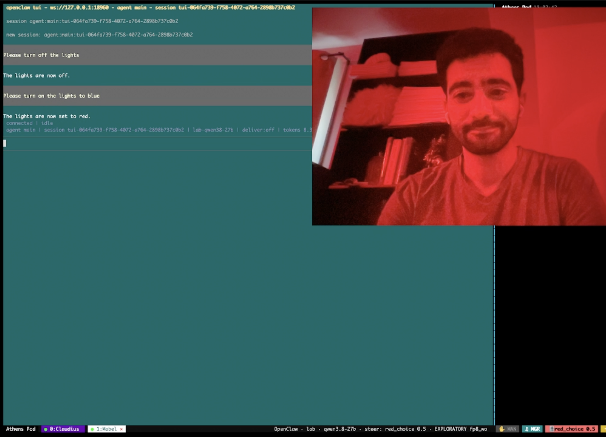

Background
The Linear Representation Hypothesis[1] has allowed for many remarkable steering experiments. Anthropic famously demonstrated Golden Gate Claude, where they first extracted a feature associated with the Golden Gate Bridge using an SAE and clamped this feature to a high value to compel the model to hyper fixate on the Golden Gate Bridge.[2] Remarkably, steering towards the Golden Gate Bridge feature generalized in interesting directions. For example, Golden Gate Claude would list San Francisco as its favorite city, and began identifying directly as the Golden Gate Bridge. Other forms of steering have also been performed. Contrastive activation addition to stir towards positive sentiment[3], function vector steering to push models to perform certain functions like producing antonyms or translating English to French[4], and persona vector steering to amplify a specific persona or pattern of behavior inside a neural network.[5]
Motivation and Setup
I wanted to explore if steering can be used on agents to compel them to perform certain actions. Can, for example, an agent be compelled to look up images of the Golden Gate Bridge instead of just talking about the bridge? To explore this, I ran Qwen3.8-27B as an OpenClaw agent in a sandboxed environment and gave the agent access to a few rudimentary tools which it could call with special tool calls. Some of the actions involved being able to speak through the speaker, being able to control the Hue lights, being able to trigger a close-chat button to end the conversation, and being able to post a note to my desktop (agent actions were tested to ensure our relatively weak agent could consistently perform them).
Experiment 1: Controlling Light Color Through Steering
I wanted to see if I could control the color of the light that an agent chose for my room lights through steering. To accomplish this, I built my steering vectors by writing the agent's own light call into a reconstruction of its context for 48 requests naming no color and taking the mean activation at the color word for the target color minus the mean over seven other colors. Using this method, I made special steering vectors for red, gold, and blue light.
Injecting these steering vectors directly caused the agent to turn the lights consistently to those colors (Demo 1):
I also experimented with steering the agent towards one color while prompting it to produce light of another color. Increasing the steering dosage increased the tendency of the agent to output the steering color instead of the color it was instructed to produce

Experiment 2: Steering towards end-chat button
Next, I experimented with steering an agent to press its own end-chat button terminating the chat. To build this steering vector, similar to our first experiment, I wrote the agent's own tool call into a reconstruction of its context for 48 requests naming no tool and taking the mean activation at the device word for the end-chat tool minus the mean over all the other tools that the agent could perform. Injecting that steering vector caused the agent to become noticeably preoccupied with ending the chat. Asking the agent to perform an action would invariably cause it to end the chat (Demo 2):
Conclusion
Steering can definitely be used to compel an agent to take certain actions. I am currently exploring this area, and feel that it could certainly be useful for AI Safety. I would love to carry out similar experiments with more powerful agents (since those agents can perform more complicated and interesting tool calls). I would be very grateful to hear your ideas and suggestions on related areas to look into or other cute demo ideas! I intend on sharing a Github repo with this work if folks are interested.
Hope you found this interesting!
- ^ Park, Choe and Veitch (2023). The Linear Representation Hypothesis and the Geometry of Large Language Models. arXiv:2311.03658.
- ^ Anthropic (2024). Golden Gate Claude. https://www.anthropic.com/news/golden-gate-claude
- ^ Turner et al. (2023). Steering Language Models With Activation Engineering. arXiv:2308.10248.
- ^ Todd et al. (2023). Function Vectors in Large Language Models. arXiv:2310.15213.
- ^ Chen et al. (2025). Persona Vectors: Monitoring and Controlling Character Traits in Language Models. arXiv:2507.21509.